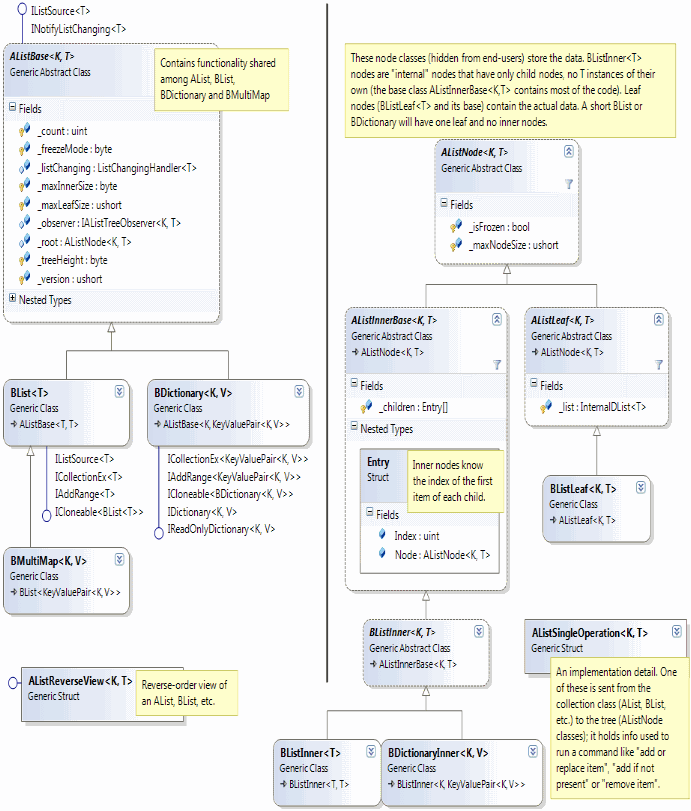

In the previous article I introduced the A-List, an "all-purpose" list, which is a cross between a conventional List<T> and an in-memory B+ tree. It also has some interesting features like combining or splitting two large lists in O(log N) time, freezing, fast cloning, and observability.
In this article I'll talk about the sorted "B" data structures based on the A-List concept: The BList<T>, the BDictionary<K,V> and the BMultiMap<K,V>. Here's a class diagram--similar to the diagram in the last article, but with different derived classes:

As I said in the first article, data structures in the A-List family (which includes BDictionary, BList and BMultiMap) are tree data structures similar to B+ tree, with one unusual feature: they are indexable; you can write alist[index] (to see how this works, it may help to look at the diagrams in the previous article.)
Growing up as a young software developer, I used a lot of indexed lists and growable arrays all over the place, and occasionally they got very slow when you inserted lots of elements in the middle, or at the beginning, of a long list. In comp-sci speak, building a list of elements, when inserting at random locations, takes O(n2) time, which means it's really damn slow for large n! A-List data structures don't have that problem; they are never slow. They do have higher constant overhead than List<T>, but they don't slow down very much as the list gets bigger.
The basic indexing functionality and management of the tree structure is implemented in the base classes AListBase<T>, AListNode<K,T>, AListInnerBase<K,T> and AListLeaf<K,T>. The new derived classes on the diagram (the ones that start with "B") provide and enforce a constraint that the data must be sorted.
The .NET framework has a class called SortedList<TKey,TValue>. You should never, ever use that class to build a sorted list! Unless, that is, the data was already sorted to start with, in which case you still don't need SortedList.
The problem with SortedList is, of course, performance. It takes O(n2) time to build a SortedList from n key-value pairs in random order. Instead, you should use SortedDictionary<TKey,TValue> or BDictionary<K,V>, depending on whether you need BDictionary's numerous features or not.
BDictionary<K,V> is very much like SortedList, just much faster, and with a heck of a lot more features. Like SortedList, BDictionary is a dictionary of items kept in sorted order, and it allows access to items by index. It is efficient for all operations: Add, Remove, IndexOf, ContainsKey, FindLowerBound, FindUpperBound, and the indexer all run in O(log N) time. You can specify a key-comparison delegate when you construct it, so the type K does not have to be directly sortable and you don't have to sort in the "natural order" for T.
It also supports the following operations that SortedList does not:
FindLowerBound(k): Finds the lowest index of an item whose key that is equal to or greater than k. It behaves like the standard C++ function lower_bound. FindUpperBound(k): Finds the index of the first item in the list that is greater than k (this tends to be less useful than FindLowerBound.) AddRange(list), RemoveRange(list), RemoveRange(start, count) this[key, defaultValue]: finds the value associated with a key. If that key is not found, returns defaultValue. Clone(): creates a copy in O(1) time (this technique is explained in the part 1) CopySection, RemoveSection : duplicates or removes any portion of the list in O(log N) time.AddIfNotPresent(k, v): Adds the specified pair only if the key is not already present in the dictionary.ReplaceIfPresent(k, v): Replaces the value associated with k, if it already exists in the dictionary. SetAndGetOldValue(k, ref v): Gets the old value associated with k, if there is one, then sets this[k] = v. And, like all classes derived from AListBase, BDictionary (and BList and BMultiMap) supports RemoveAll(lambda), fast Clone(), Freeze(), Slice(), ReverseView and the ListChanging event.
BDictionary<K,V> will give you a small problem if K just happens to be int, because there is a this[K] indexer and also a this[int] indexer. So if you call dict[4], does that get the fifth element (of type KeyValuePair<K,V>), or the V value associated with the key 4? Well, the two indexers exist in different classes: this[K] is in the derived class, and this[int] is in the base class. So dict[4] will get the V value associated with the key 4, and you can get the fifth element with an upcast: ((AListBase<int,KeyValuePair<int,V>>) dict)[4]. Okay, it's a bit clunky, but it works.
BList<T> is simply a sorted list (like all other A-List classes, it is structured as a B+ tree). Unlike SortedList<TKey,TValue> and BDictionary, it is just a list, not a dictionary. BList permits duplicate items, so it is not a "set" class. It allows you to specify a comparison delegate when you construct it, so the type T does not have to be directly sortable and you don't have to sort in the "natural order" for T.
BList has all the same features of BDictionary, just without that pesky distinction between "keys" and "values". There's not much else to say about BList, so let's move on...
BMultiMap<K,V>, derived from BList<KeyValuePair<K,V>>, is a special kind of dictionary that permits duplicate keys (as well as duplicate values). Or, viewed from a different perspective, it allows multiple values to be associated with a single key. It is comparable to the C++ std::multimap class, although it does some things more easily (for instance you can avoid duplicate key-value pairs using AddIfUnique().)
To use BMultiMap<K, V>, both K and V must be comparable (unlike BDictionary which only needs the key type K to be comparable). This requirement is needed for some methods, such as AddIfUnique and Remove(KeyValuePair<K,V>) (inherited from BList), to work correctly. If you want to use a V that is not actually comparable, you could use a comparison function that pretends all Vs are equal (by always returning 0); just be aware that any methods that try to distinguish Vs from each other will behave as if they are all equal! You could also sort based on GetHashCode(), just be very, very careful to handle the possibility that two unrelated objects have the same hashcode (IndexOfExact() sometimes help deal with this case).
BMultiMap provides the illusion that it is a dictionary of sorted collections. The indexer this[K] returns a BMultiMap<K,V>.Values structure, which implements ICollection<V> and provides access to all the values associated with a particular key. To add a new key-value pair, you can either call Add(K, V) on the multimap itself, or this[K].Add(V). Similarly you can remove all the values for a key using either RemoveAll(k) or this[K].Clear().
In reality, BMultiMap is not really a dictionary of collections, it is just a single sorted list. The list is sorted first by key, and then by value, so all the values associated with a particular key k are adjacent to each other in the list. The Values structure calls FindLowerBound and FindUpperBound to figure out where this "sub-list" begins and ends inside the list as a whole.
Please note that the collection returned by this[K] is not indexable; you can't write this[key][0], for example, although you can of course use this[K].First(), relying on the LINQ extension method First(), and you can use a foreach loop to iterate over the values for a particular key. The Values collection doesn't have an indexer because it would be either incorrect or inefficient. Incorrect, because if it cached the location of the first item to improve performance, this location would change whenever items were added or removed in a different part of the map. On the other hand, if Values does not cache the location of the first item (and it doesn't), a loop like this could be very slow:
var values = multimap[key];
for (int i = 0; i < values.Count; i++) {
DoSomethingWith(values[i]);
}
First of all, measuring the Count requires the multimap to be searched twice: once to find the lower bound (the location where the Values start for the specified key) and once more for the upper bound (where the Values for this key end). And then, because these indexes are not cached, values[i] would have to find the lower bound again, then looking up item at offset i from the lower bound, and finally check to make sure that the key of this item is the same (if not, it would have to throw IndexOutOfRangeException). Since all this work would slow down your code, no indexer is provided. Use a foreach loop instead; the lower bound will be computed only once, before the first iteration of the loop, and the upper bound is not computed (instead, the Values enumerator keeps scanning forward in the B+ tree until the key of the current KeyValuePair changes).
When calling the indexer this[K], the specified key does not have to exist in the collection. If it doesn't exist, the indexer returns an empty collection (by the way, do not call this[k].Count unnecessarily; remember, two searches are required to measure the collection's length.)
BMultiMap has several methods that you might find useful:
FindLowerBound(k): just like BDictionary's method by the same name, it finds the first element equal or greater than k. Likewise, FindUpperBound finds the first element greater than k.FirstIndexOf(k): like FindLowerBound(k) except that it returns -1 if k is not found.AddIfUnique(k, v): adds a key-value pair if there is not already a pair that compares equal to the new one. Remove(k, max): removes the first max values associated with the specified keyRemoveAny(k): removes any one pair that has the specified key (it's similar to Remove(k, 1) but runs slightly faster and you can't predict which one it will remove)RemoveAll(k): removes all key-value pairs with the specified key. IndexOfExact(k), FindLowerBoundExact(k): finds the index of a value k that not only compares equal using the comparison function, but also compares equal according to object.Equals. This can be useful if the comparison function only sorts based on part of the object, but you'd also like to match the rest of the object that the comparison function ignores.So there you have it, a bunch of sorted data structures.
In terms of performance, I haven't benchmarked any of these data structures, but I can predict with confidence that:
AList<T> family of data structures is generally slower than List<T> for indexing, enumerating (foreach), adding items at the end, removing items from the end, and any operation involving a short list (less than 20-50 items). AList<T> family of data structures is generally faster than List<T> for inserting and removing at random locations, merging lists, splitting lists, cloning, etc., for lists that are long.AList<T> family of data structures will generally use slightly more memory than List<T>. BDictionary<K,V> is generally much faster than SortedList<K,V> for lists of significant size (above 50 items). BList<T> and BMultiMap<K,V> have similar performance as BDictionary<T>. BDictionary<K,V> will be slower than Dictionary<K,V> but it will generally use less memory.BDictionary<K,V> is faster or slower than SortedDictionary<K,V> but it will definitely use less memory.BMultiMap<K,V> has the same memory requirements as BDictionary<K,V>, and it will use much less memory than Dictionary<K,List<V>>. In part 3, I'll talk about the much simpler DList<T> and DListInternal<T> data structures, which are faster than both List<T> and AList<T>
The download associated with this article has been refactored into two libraries since the previous article, but it still contains lots of stuff that is not related to ALists. Besides ALists, I've written several other collection classes and various other "utility" libraries--symbols, VLists, extension methods, that sort of thing--which I'm a bit too busy (lazy?) to strip out right now. I'll try to do better when I get around to Part 3 of the series. For now, Loyc.Essentials.dll contains miscellaneous code, some of it related to my collection classes, some of it unrelated. Loyc.Collections.dll is the main collection of collection classes, including all the AList data structures. There is also a test suite (NUnit-based) which the included Tests.exe program will run.
The projects and solution are for Visual Studio 2010 and currently compile for .NET 4, although there isn't anything in the implementation of the A-Lists that requires version 4 of .NET. If you adapt A-Lists for .NET 2.0, Silverlight, XNA, etc., feel free to leave a comment about your success.